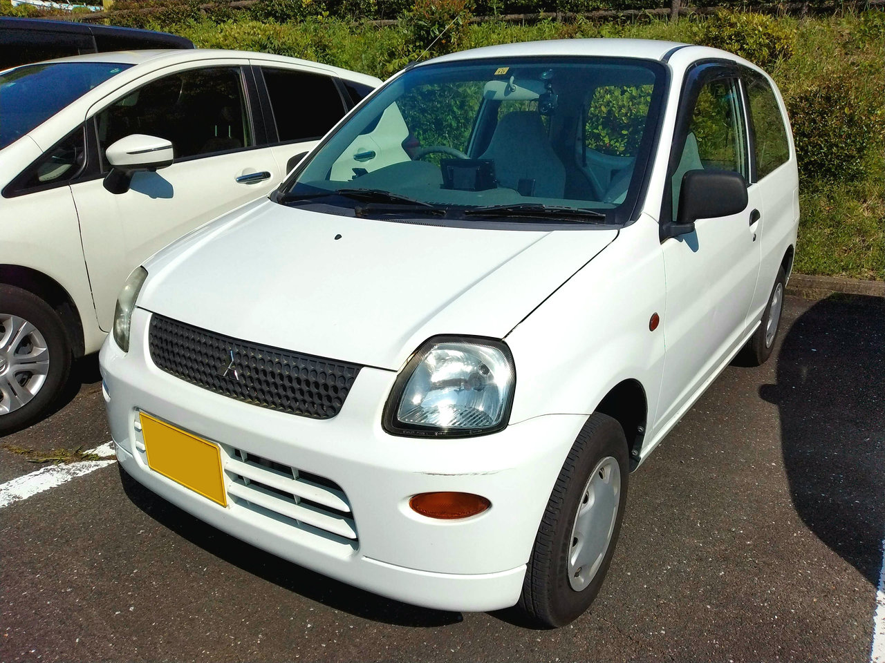

ライラ (商用グレード) / 2WD / 5MT / 2008年式
静岡県の中古車販売店で購入。
車両価格9万円、車検2年付きで乗り出し価格15万円でした。
| 2022/09/22 | 車検@軽自動車検査協会 浜松支所 |
| 2022/09/20 | 緊急保安炎筒 (国際化工 サンフレヤーACE) 交換 |
| 2022/06/04 | クォーターガラスフィルム (ミラリード FE-21) 貼付 |
| 2022/05/24 | 独立型3分岐アクセサリーソケット 設置 |
| 2022/05/07 | GPS&レーダー探知機 (ユピテル A210 + OBD12-M) 設置 |
| 2022/05/01 | ポータブルカーナビ (A.I.D. GU72CB) 設置 |
| 2022/03/28 | 納車から5000km (総走行75400km) |
| 2022/03/05 | ドライブレコーダー (グラモラックス GRND-DR100AKL2B) 取付 |
| 2022/02/13 | ホルダー付デジタル時計 設置 |
| 2021/11/20 | 音楽再生用端末 (ドコモ スマートフォン P-07C) 設置 |
| 2021/10/26 | 納車から3000km (総走行73400km) |
| 2021/10/24 | 納車から1年 |
| 2021/09/20 | 納車から2000km (総走行72400km) |
| 2021/09/16 | ソフトホルダー付スライドドリンク (槌屋ヤック PZ-717) 設置 |
| 2021/08/07 | タイヤ交換 (ブリヂストン SNEAKER SNK2 145/80R12) |
| 2021/07/24 | バッテリー交換 (オートバックス GAIA SILVER 44B19L) |
| 2021/05/01 | ポータブルカーナビ (ユピテル YPB628si) 設置 |
| 2021/04/25 | 納車から1000km (総走行71400km) |
| 2021/03/18 | 3連アクセサリーソケット 設置 |
| 2021/03/09 | 滑り止めマット、スマホホルダー 設置 |
| 2021/02/27 | アクセサリーソケット 取り付け |
| 2021/02/25 | 荷物用カゴ、無香消臭剤 (2本目) 設置 |
| 2021/02/03 | 小物入れ 設置 |
| 2021/01/04 | スペアキー (2本目) 作成 |
| 2020/12/26 | ワイパーブレード 交換 |
| 2020/12/20 | カップホルダー・無香消臭剤 設置 |
| 2020/12/17 | Bluetoothスピーカー 設置 |
| 2020/10/27 | スペアキー (1本目) 作成 |
| 2020/10/24 | 納車 |
| ミニカのカタログ | 過去に発行されたミニカのPDFカタログを「ウェイバックマシン」から閲覧できます。 |
| 日付 | 給油地 | 給油量 | トリップメーター距離 | 燃費（満タン法） |
|---|---|---|---|---|
| 2023/01/28 | 愛知県豊川市 | 20.31 L | 401.8 km | 19.78 km/L |
| 2022/12/24 | 静岡県浜松市 | 20.43 L | 508.7 km | 24.90 km/L |
| 2022/12/03 | 愛知県豊川市 | 22.36 L | 473.7 km | 21.19 km/L |
| 2022/09/22 | 静岡県浜松市 | 22.36 L | 544.6 km | 24.36 km/L |
| 2022/07/09 | 静岡県浜松市 | 18.53 L | 446.2 km | 24.08 km/L |
| 2022/05/31 | 静岡県浜松市 | 21.72 L | 497.6 km | 22.91 km/L |
| 2022/04/30 | 愛知県西尾市 | 17.88 L | 427.3 km | 23.90 km/L |
| 2022/03/26 | 愛知県豊川市 | 24.21 L | 557.2 km | 23.02 km/L |
| 2022/02/19 | 愛知県豊川市 | 20.83 L | 435.7 km | 20.92 km/L |
| 2021/12/28 | 愛知県豊川市 | 19.29 L | 401.4 km | 20.81 km/L |
| 2021/12/04 | 愛知県豊川市 | 21.93 L | 473.0 km | 21.57 km/L |
| 2021/10/31 | 静岡県浜松市 | 21.32 L | 556.8 km | 26.12 km/L |
| 2021/10/22 | 愛知県豊川市 | 9.97 L | 209.5 km | 21.01 km/L |
| 2021/10/15 | 愛知県豊橋市 | 23.80 L | 526.9 km | 22.14 km/L |
| 2021/09/07 | 愛知県岡崎市 | 22.50 L | 312.6 km | 13.89 km/L |
| 2021/06/26 | 愛知県岡崎市 | 22.70 L | 434.1 km | 19.12 km/L |
| 2021/04/25 | 愛知県岡崎市 | 22.40 L | 367.9 km | 16.42 km/L |
| 2021/02/06 | 愛知県岡崎市 | 20.50 L | 370.5 km | 18.07 km/L |
| 2020/11/28 | 愛知県岡崎市 | 23.00 L | 226.2 km | - |
| 2020/10/24 | 静岡県浜松市 | - | - | - |
| 日付 | 場所 | オドメーター距離 | 備考 |
|---|---|---|---|
| 2022/09/20 | 愛知県岡崎市 | 77106 km | オイルエレメント交換 |
| 2021/11/23 | 静岡県浜松市 | - |